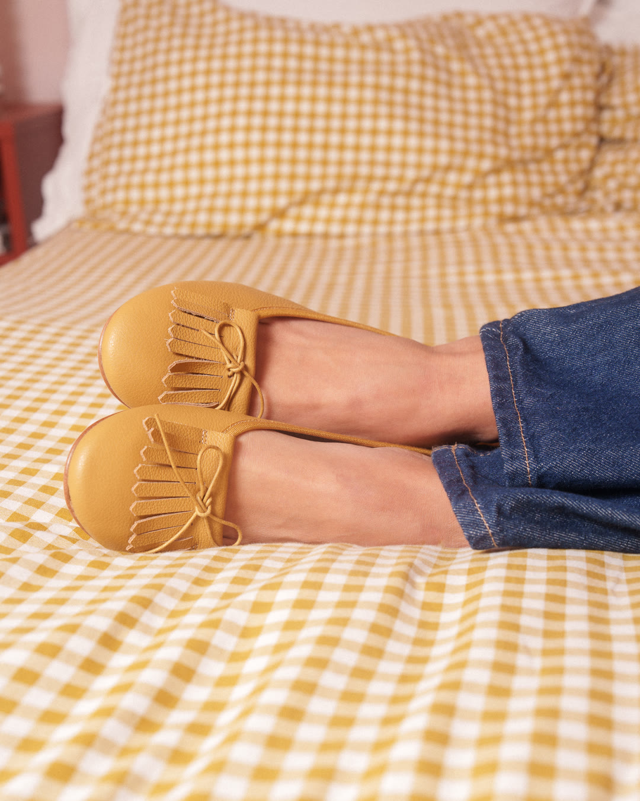
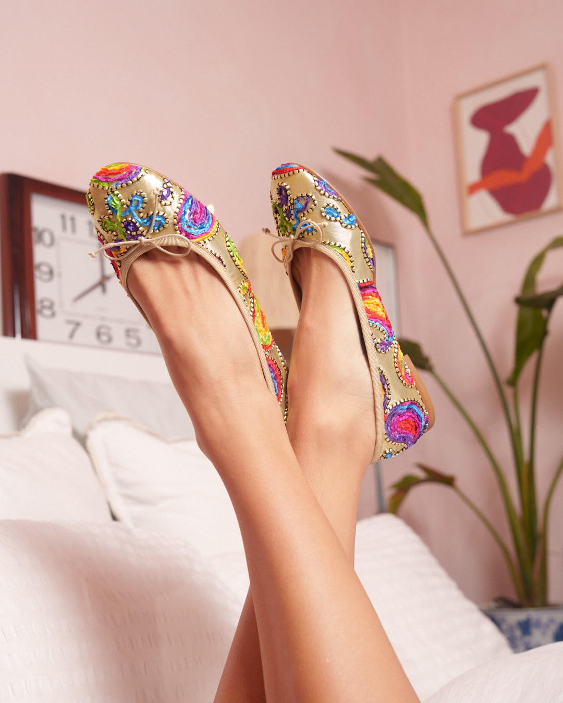
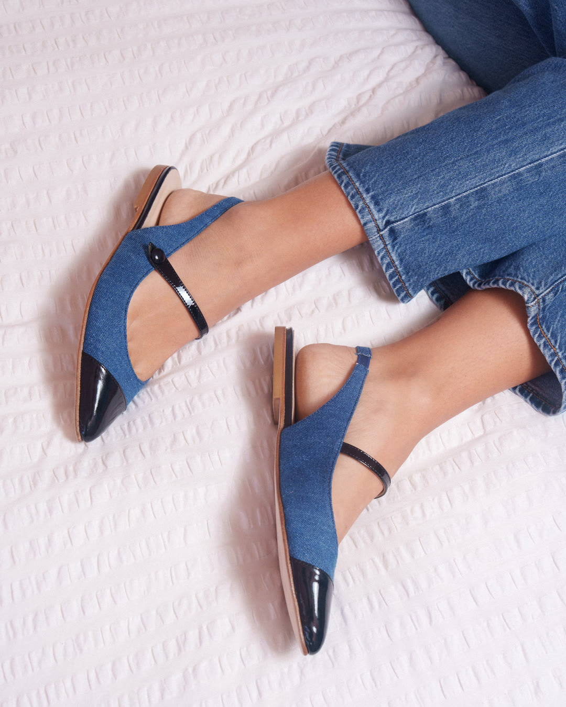
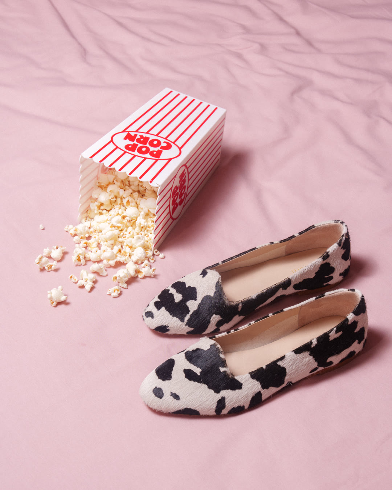

The Pump Edit
A love letter to the woman who does it all, The Pump Edit pairs seven pump styles with the seven days of her week. Each shot captures a different mood and moment – power, ease, playfulness, calm – set against warm, intimate bedroom scenes. The result is a collection that feels less like footwear and more like a wardrobe for her many selves.
This campaign was a deliberate shift toward lifestyle-led content. The “She wears the week” structure wasn't just a theme – it gave us a campaign we could stretch across seven weeks, sustaining a presence while other campaigns ran in parallel. It was also one of our first shoots to lead with lifestyle over product, built on the understanding that not everyone wants to be advertised to. The aim was twofold: drive sales, but also create content that earns attention on its own terms.



